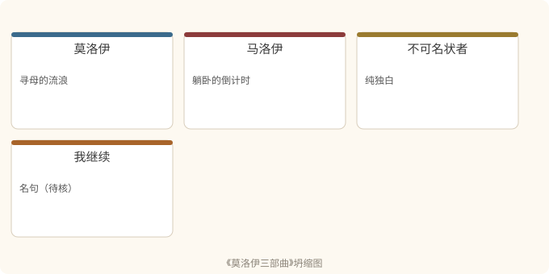

莫洛伊、马洛伊、不可名状的威廉（莫洛伊三部曲）
一、基本信息
| 作者 | 贝克特 |
|---|---|
| 成书/出版 | 1947—1950年（作者页 B094 口径：莫洛伊三部曲 (1947–50)） Samuel Beckett — Encyclopaedia Britannica (by Martin J. Esslin)（百科全书） |
| 国别/地区 | 爱尔兰 |
| 时代 | 现当代 · 20世纪 |
| 体裁 | 小说三部曲 |
| 语言 | 法语 |

《莫洛伊三部曲》坍缩图（主题·结构图）
二、创作背景
作者页（B094）：贝克特 major_works 载'莫洛伊三部曲 (1947–50)'（B094 作者页定位，详见 dengdaigou 条核对）。
三部（通说待核）：莫洛伊的寻母→马洛伊的躺卧倒计时→'我'的不可名状独白。
三、内容脉络
三部曲：从叙事到纯独白的坍缩（通说待核）。
四、主要人物表
| 人物 | 身份 | 说明 |
|---|---|---|
| 莫洛伊/马洛伊 | 流浪者 | （通说待核） |
| '我' | 独白者 | （通说待核） |
五、主题与艺术特点
- 叙事的自我坍缩（通说）。
- '我继续，不能继续，我继续'（名句通说待核）。
- 法语转向（B094 语境——贝克特战后改用法语写作）。
六、影响与评论
- 作者页：贝克特小说三部曲（B094 作者页口径）。
Samuel Beckett — Encyclopaedia Britannica (by Martin J. Esslin)（百科全书） - 与《等待戈多》并立的散文极点（通说待核）。
Samuel Beckett — Encyclopaedia Britannica (by Martin J. Esslin)（百科全书）
七、阅读建议
难点
- 独白的坍缩结构。
- '我继续'句法。
- 《莫洛伊》（湖南文艺出版社《贝克特选集》，通说待核）。
- 法文原版（Minuit）。
先戏剧后小说三部曲。
八、待核实
- 三部书名与年份核对。
- '我继续'原句核对。
- 法语转向（1946年后）细节待核。
本页主要来源
贝克特的其他收录作品：等待戈多